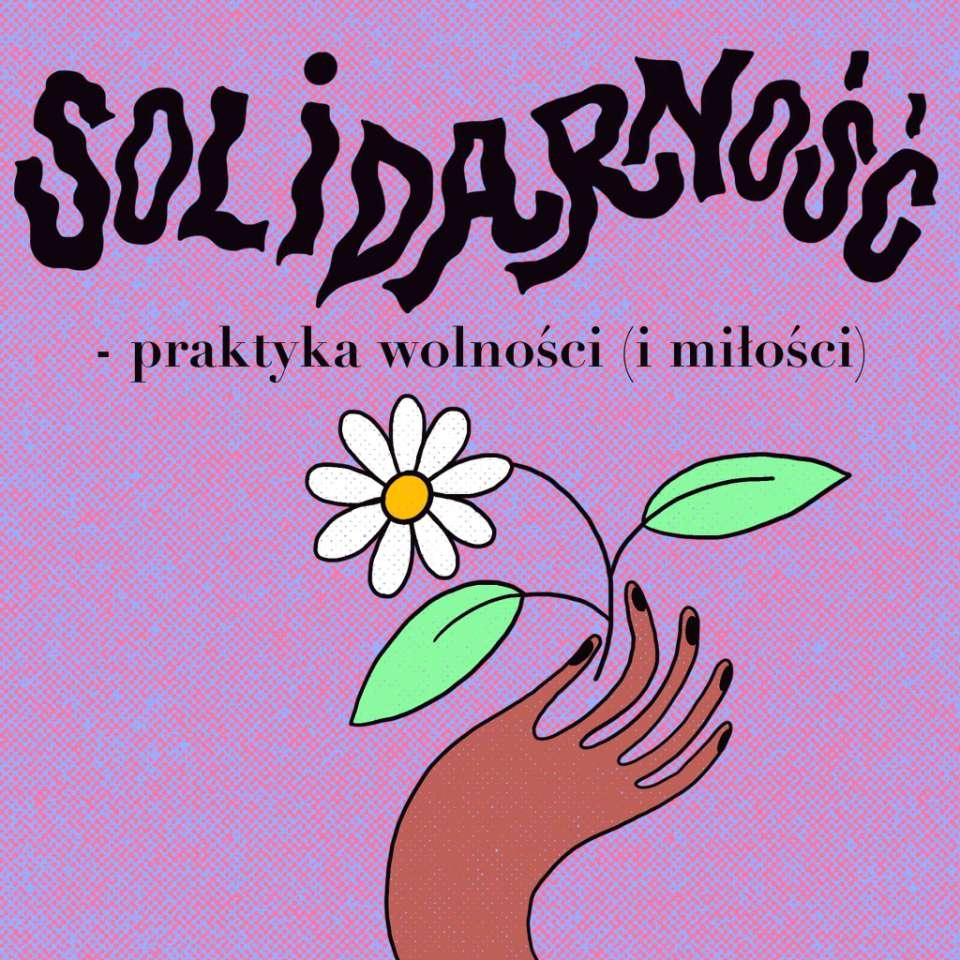
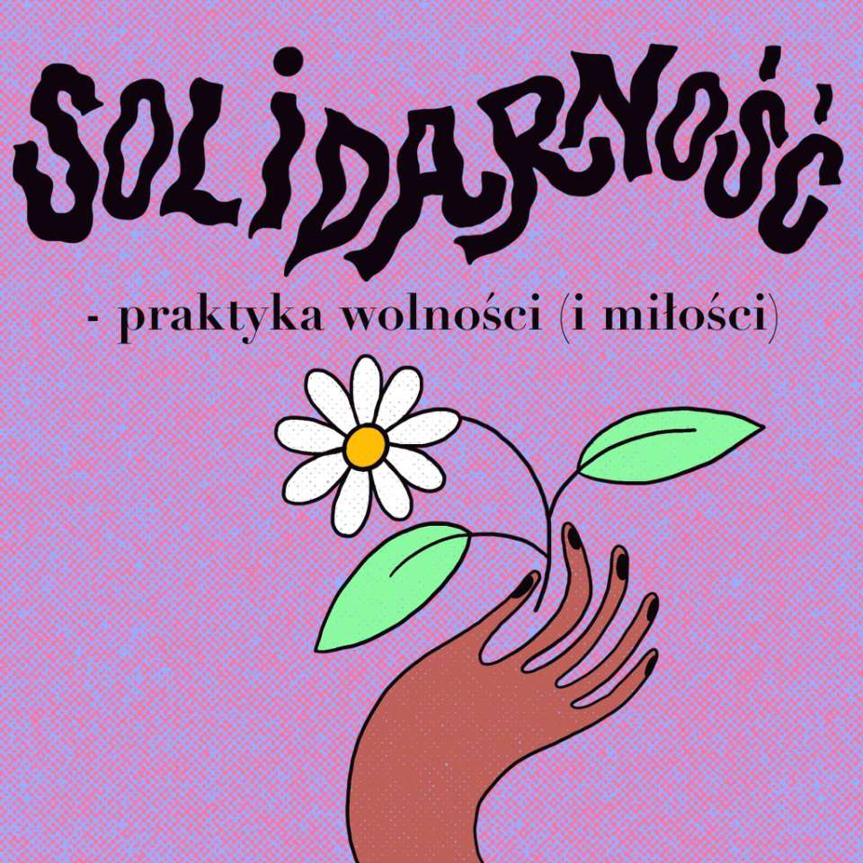

Nasze działania rozpoczynaliśmy jako grupa przyjaciół jeżdżących pomagać na granice polsko-białoruską. Od lutego 2022 roku działamy jako Stowarzyszenie Podróżnych Ugościć.
Do czerwca tego roku skupialiśmy się głównie na pomocy osobom przebywającym w Strzeżonych Ośrodkach dla Cudzoziemców. Na naszych mediach społecznościowych zorganizowaniśmy trwającą kilka miesięcy akcje. Jej celem było zaangażowanie prywatnych osób z całej Polski w przygotowanie paczek dla konkretnych osób przebywających w ośrodkach zamkniętych. Każdy kompletujący paczkę znał wiek, imię i indywidualne potrzeby wspieranej osoby. Zależało nam zmniejszeniu dystansu między pomagającymi a osobami w ośrodkach. Współpracujący z nami zespół wolontariuszy pilnował by każda paczka była kompletna i odpowiadała wymaganiom danego SOC’u. Dzięki tej akcji udało nam się przygotować ponad 1000 dostosowanych do indywidualnych potrzeb, imiennych paczek.

Poza zapewnieniem podstawowych potrzeb materialnych organizowaliśmy pomoc prawną, medyczną oraz psychologiczną.
Dzięki naszemu naciskowi i akcjom medialnym dotychczas udało nam się wydostać z ośrodków ponad 15 osób.
Aktualnie zapewniamy wsparcie osobom, które po wielu miesiącach opuściły Strzeżone Ośrodki dla Cudzoziemców i zdecydowały osiedlić się w Polsce.
Jesteśmy również zaangażowani w pomoc Ukrainie. Razem z Grupą Granica i Chlebem i Solą organizujemy regularne przejazdy autokarowe pomiędzy Lwowem a Polską. Do tej pory udało się ewakuować ponad 11 tys. osób


 



Wpieramy osoby, które po wielu miesiącach opuściły Strzeżone Ośrodki dla Cudzoziemców i zdecydowały osiedlić się w Polsce. Najczęstsze formy asysty jakie oferujemy to pomoc w znalezieniu mieszkania i pracy, szkoły oraz kursów językowych i zawodowych. Działamy tam gdzie wsparcie instytucjonalne jest nie wystarczające albo nie istnieje w ogóle.
W czasie 6-12 miesięcy pobytu w ośrodku strzeżonym żadna z osób nie ma możliwości pracy. Po wyjściu z ośrodka osoby często nie dysponują środkami finansowymi niezbędnymi do rozpoczęcia samodzielnego życia. Zapewniamy im wsparcie poprzez opłacenie kaucji za mieszkanie, kosztów transportu miejskiego, badań i dokumentów potrzebnych do pracy.
Zależy nam żeby osoby którym pomagamy jak najszybciej się usamodzielniły i odzyskały poczucie sprawczości. Do tej pory kilkanaście osób przy naszym wsparciu rozpoczęło prace i wprowadziło się do nowych mieszkań.
W planach mamy utworzenie kompleksowego pakietu pomocy dla osób wychodzących ze strzeżonych ośrodków. Chcemy aby obejmowała ona pomoc prawną, konsultacje psychologiczne a także dostęp do mieszkania na start. Działamy z pomocą powiększającej się grupy wolontariuszy.
Jednym z naszych priorytetów jest utworzenie miejsc pracy dla osób uchodźczych. Zależy nam aby współtworzyły one treści na platformach społecznościowych stowarzyszenia. Włączenie głosu osób uchodźczych w społeczną debatę o kwestiach migracji i kryzysu humanitarnego na granicy wydaje nam się kluczowym przedsięwzięciem.
Dzięki waszym wpłatom możemy dalej skutecznie działać! Dziękujemy za Wasze zaufanie i każdą wpłaconą złotówkę!
Przez Facebook: facebook.com/podroznychugoscic
Nr konta: 55 1140 2004 0000 3102 8229 2022
Nazwa: Stowarzyszenie Podróżnych Ugościć
W tytule przelewu prosimy o wpisanie "Darowizna na cele statutowe"
NIP: 5213961281
REGON: 521399421
Instagram: @podroznychugoscic_pl
Facebook: facebook.com/podroznychugoscic
Tiktok: @podroznychugoscic
Regulamin jest dostępny do pobrania tutaj.
Zawsze możesz skontaktować się z nami przez nasz adres email:
Podroznychugoscic@gmail.com